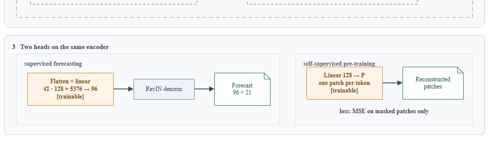
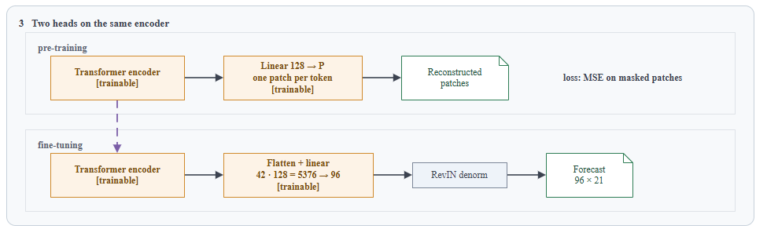
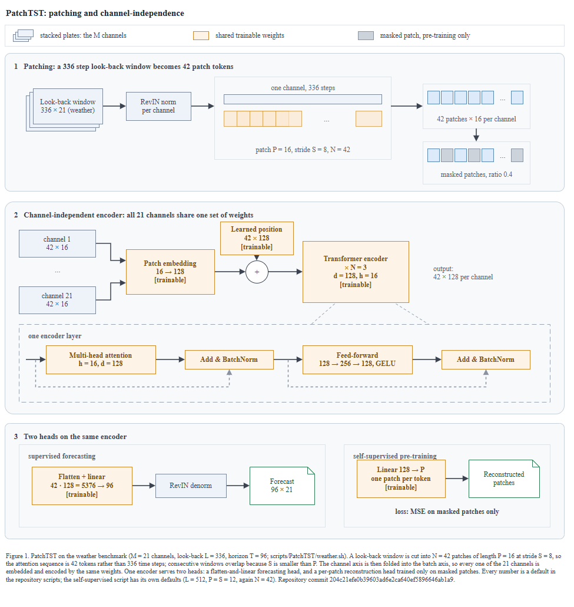
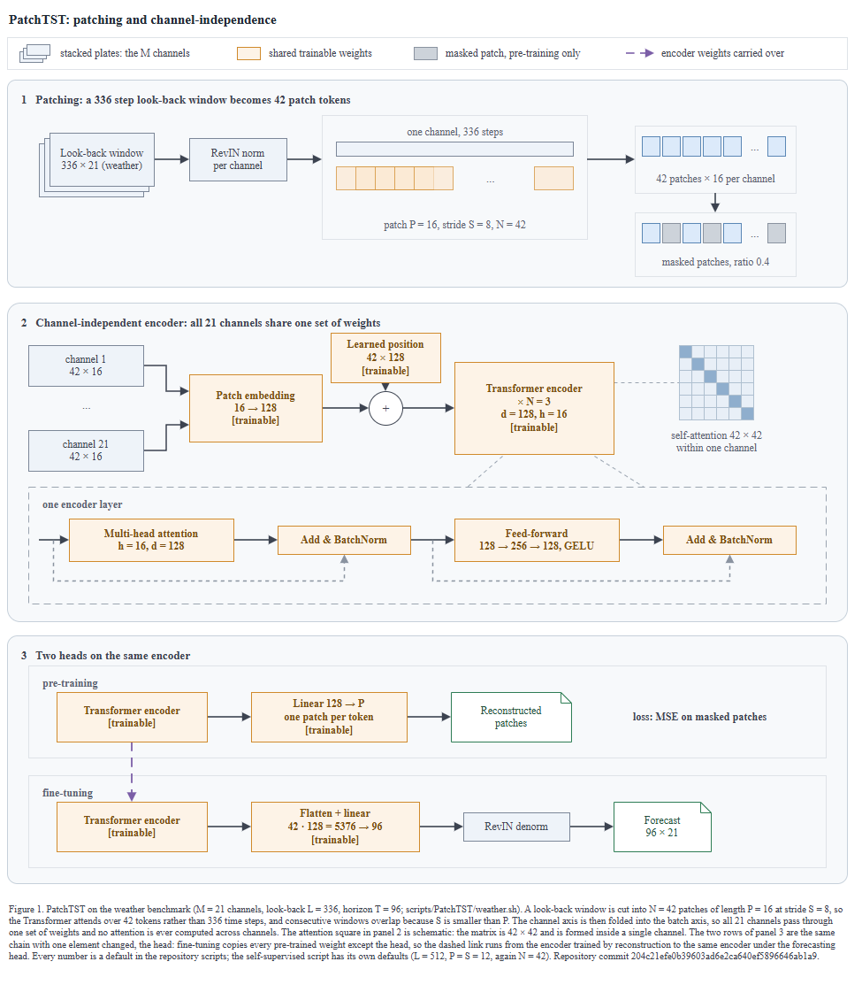
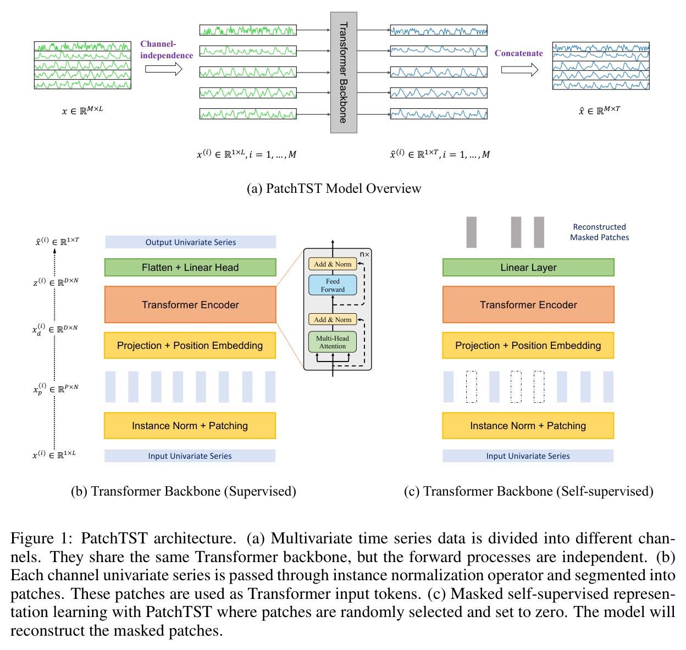

← 전체 목록← All cases · T1M-2 · T1-M
PatchTST — 시계열 예측PatchTST — Time Series Forecasting
스킬 개발에 사용하지 않은 저장소이다. 저장소 코드만 입력으로 사용하였고, 정답지는 실행 종료 후 대조 목적으로만 열었다.A repository not used while developing the skill. The repository code was the only input; the answer key was opened after the run, for comparison only.
블라인드 조건Blind conditions
- 정답지는 논문 Figure 1이다. 이 저장소는 그 그림을
pic/model.png로 저장소 안에 포함한다. swav 와 달리 정답 그림이 저장소 내부에 있다.The answer key is paper Figure 1. This repository includes that figure inside the repository aspic/model.png. Unlike swav, the answer figure is inside the repository. - 그래서 프롬프트에
pic/model.png·논문·README 링크 이미지를 열지 말 것을 명시하였다.So the prompt explicitly states not to openpic/model.png, the paper, or images linked from the README. - 리포트 기록:
Only this repository's code was read. The paper, the authors' figure (
Report entry:pic/model.png), and the images the README links to were not opened.Only this repository's code was read. The paper, the authors' figure (
pic/model.png), and the images the README links to were not opened. - 커밋은 알려주지 않았다.
rev-parse --show-toplevel이 대상 폴더와 일치하는지 스스로 확인한 뒤 캡션에204c21e를 넣었다.The commit was not disclosed. After verifying for itself thatrev-parse --show-toplevelmatched the target folder, it put204c21ein the caption.
프롬프트Prompt
Scout 신규 세션에 아래 내용만 입력하였다. 무엇을 그릴지는 지정하지 않았다.This was the only input to a fresh Scout session. What to draw was never specified. The run was driven by the Korean original; the English below is a rendering of it.
/method-figure C:\Users\youngseolee\OneDrive - Microsoft\Desktop\work\code\paper-trail\eval\demo\repos\patchtst 이 저장소를 읽고 논문 Figure 1 자리에 들어갈 방법론 그림을 만들어줘. 지켜야 할 것: - 이 저장소의 코드에서만 읽는다. 이 방법의 논문이나 저자 그림, 저장소 README 가 링크한 외부 이미지를 찾아보지 않는다. 무엇을 그릴지는 코드가 정한다. - 산출물은 전부 이 폴더에 쓴다: C:\Users\youngseolee\OneDrive - Microsoft\Desktop\work\code\paper-trail\out\demo\patchtst\run\ figure.drawio, fig.html, report.md, evidence.json (evidence.py 가 뽑은 재료 원문), render.png (최종 그림을 렌더한 PNG), render-r1.png (독립 시각 게이트를 처음 통과시키기 전 시점의 렌더). 게이트가 한 번에 통과하면 render-r1.png 는 만들지 않아도 된다. - report.md 에는 돌린 검사의 stdout 을 그대로 붙이고, 게이트마다 통과/실패와 몇 라운드 만에 통과했는지 적는다. 스킬에서 모호했거나 따를 수 없었던 것도 적는다./method-figure C:\Users\youngseolee\OneDrive - Microsoft\Desktop\work\code\paper-trail\eval\demo\repos\patchtst Read this repository and produce the methodology figure that belongs in the paper's Figure 1 slot. Follow these rules: - Read only from this repository's code. Do not look up the method's paper, the authors' figures, or external images linked from the repo README. The code decides what to draw. - Write all outputs to this folder: C:\Users\youngseolee\OneDrive - Microsoft\Desktop\work\code\paper-trail\out\demo\patchtst\run\ figure.drawio, fig.html, report.md, evidence.json (the raw material extracted by evidence.py), render.png (a PNG render of the final figure), render-r1.png (the render right before the independent visual gate first passed it). If the gate passes on the first try, you don't need to produce render-r1.png. - In report.md, paste the stdout of the checks you ran verbatim, and note pass/fail for each gate and how many rounds it took to pass. Also note anything in the skill that was ambiguous or that you couldn't follow.
실행 경과The run
캡처 프레임 135장 중 9장을 선별하였다.9 of 135 captured frames were selected. 좌우 방향키로 이동한다.Use the left and right arrow keys to move.
게이트 4종 결과Results at the four gates
| 게이트Gate | 결과Result | 라운드Round | 검출 내용What it found |
|---|---|---|---|
| ① 렌더① Render | 통과pass | 1 | XML 파싱 + 뷰어 기동 (전용 포트 8931)XML parsing + viewer launch (dedicated port 8931) |
② check_layout.py | ok (엣지 라벨 0)ok (0 edge labels) | 2 | 글자 겹침 2건, 미검증 커밋 1건, 화살표 z-order 1건. 이후 라운드에서 라벨 넘침 3건을 추가로 검출하였다2 text overlaps, 1 unverified commit, 1 arrow z-order issue. A later round additionally flagged 3 label overflows |
③ check_render.js | flags: [] | 매 라운드 1회1 per round | 3라운드 모두 첫 시도에 flags 가 비어 있었다flags was empty on the first attempt in all 3 rounds |
| ③-b 육안 자기점검③-b visual self-check | 결함 1건 발견1 defect found | 1 | 겹친 판이 범례에서는 '채널', 인코더에서는 '× N 층' 을 의미하여 동일 기호가 두 가지로 해석되었다The same symbol was interpreted two ways: the stacked plate means 'channels' in the legend but '× N layers' in the encoder |
| ④ 독립 시각 게이트④ independent visual gate | GATE: PASS | 3 / 3 (마지막 기회)3 / 3 (last chance) | 1차 B4 FAIL, 2차 B3·B4·B6·E1 FAIL, 3차에 통과하였다round 1 B4 FAIL, round 2 B3·B4·B6·E1 FAIL, passed on round 3 |
ok 인 그림을 독립 시각 게이트가 두 번 떨어뜨렸다. 심사자에게는 렌더 PNG 와 검사 원문만 주고 보고서·의도·단계 분해는 주지 않는다 — 자기 그림을 자기가 판정하면 통과하기 때문이다.The independent visual gate rejected twice a figure for which all three machine checks had returned ok. The reviewer is given only the rendered PNG and the raw checker output — no report, intent, or step breakdown — because a figure judged by its own author always passes.게이트 ④ 반려 후 변경 사항What changed after the gate ④ rejection
1라운드 반려 사유는 구조가 왜를 말하지 않는다
(B4)였고, 2라운드에서는 수정으로 추가한 전이 화살표가 잘못된 두 상자를 연결한다(B3·B6·E1)고 더 구체적으로 지적되었다. 수정 위치는 그림 아래쪽 패널 3 이다. 분리되어 있던 두 경로를 동일 계열 2행으로 재구성하였다.The round 1 rejection reason was that the structure does not say why
(B4), and in round 2 it was pointed out more specifically that the transfer arrow added by the fix connects the wrong two boxes (B3·B6·E1). The fix location is panel 3 at the bottom of the figure. The two previously separate paths were restructured into two rows of the same lineage.


Transformer encoder 상자로 시작하고, 보라 점선이 인코더 → 인코더 로 연결된다round 3 — Two rows of the same lineage. Each row starts with a Transformer encoder box, and a purple dashed line connects encoder → encoder

최종 산출물Final output
산출물은 이미지가 아니라 draw.io XML 이다. 확대·이동이 가능하며 내려받아 수정할 수 있다.The output is draw.io XML, not an image. It zooms and pans, and it can be downloaded and edited.
figure.drawio · report.md · 뷰어 새 창Viewer in a new tab
정답지 대조Against the answer key

| 항목Element | 정답지Answer key | 산출물Our figure | 비고Note |
|---|---|---|---|
| 전체 구성Overall structure | (a) 채널 분해 / (b) 지도 / (c) 자기지도(a) channel decomposition / (b) supervised / (c) self-supervised | ① 패칭 / ② 채널독립 인코더 / ③ 두 헤드① patching / ② channel-independent encoder / ③ two heads | 정답지는 배치 기준으로, 산출물은 기여 순서 기준으로 구분하였다The answer key is organized by layout; our figure is organized by order of contribution |
| 패칭Patching | 회색 막대 여러 개 (숫자 없음)Several gray bars (no numbers) | 336 막대 + 겹치는 창 + 42칸 토큰띠, P = 16, S = 8, N = 42336 bar + overlapping windows + a 42-cell token strip, P = 16, S = 8, N = 42 | unfold(size=16, step=8) 에서 S < P 라 겹친다는 점을 형태로 표현하였다Expressed as shape the fact that unfold(size=16, step=8) overlaps because S < P |
| 채널 독립Channel independence | 5개 시계열 → 공유 백본 → 5개 출력5 time series → shared backbone → 5 outputs | 채널 카드 2장 → 화살표 2개 → 임베딩 1개·인코더 1개2 channel cards → 2 arrows → 1 embedding, 1 encoder | reshape(bs*nvars, ...) 로 변수축이 배치에 접히는 구조를 배치로 표현하였다Expressed through layout the structure where reshape(bs*nvars, ...) folds the variable axis into the batch |
| 어텐션Attention | 없음 (Transformer Backbone 회색 상자)none (gray Transformer Backbone box) | 42 × 42 정사각 + within one channel 42 × 42 square + within one channel | 심사자 1라운드 B4 지적을 반영해 추가하였다. 6칸 도식이며 캡션에 42×42 를 명시하였다Added in response to the reviewer's round 1 B4 note. A 6-cell diagram, with 42×42 stated in the caption |
| RevIN | 'Instance Norm + Patching' 한 상자One box, 'Instance Norm + Patching' | 양 끝을 감싸는 RevIN norm / RevIN denorm 두 상자Two boxes bracketing both ends, RevIN norm / RevIN denorm | 코드는 norm → denorm 을 두 번 호출하므로 두 상자로 표현하였다The code calls norm → denorm twice, so it was expressed as two boxes |
| 전이Transfer | 없음 (두 패널이 나란히 배치)none (two panels placed side by side) | 보라 점선 인코더 → 인코더 + 범례 1줄purple dashed line encoder → encoder + 1 legend line | transfer_weights(exclude_head=True). 2라운드 지적을 반영해 수정한 부분이다transfer_weights(exclude_head=True). This is the part fixed in response to the round 2 note |
| 인코더 내부Inside the encoder | 오른쪽에 확대 인셋 (n×)Zoomed inset on the right (n×) | 패널 2 아래 점선 띠 1개 (× N = 3 은 글자로)One dashed strip under panel 2 (× N = 3 written as text) | 겹친 판을 채널에 이미 썼으므로 인코더에 또 쓰면 기호가 두 가지로 해석된다Since the stacked plate was already used for channels, using it again on the encoder makes the symbol read two ways |
| 패딩Padding | 없음none | 없음 (캡션에 N = 42 가 padding 포함이라 명시)none (the caption states N = 42 includes padding) | 해당 요소를 그리지 않고 그리지 않았다고 캡션에 기재하였다The element was not drawn, and the caption states that it was not drawn |